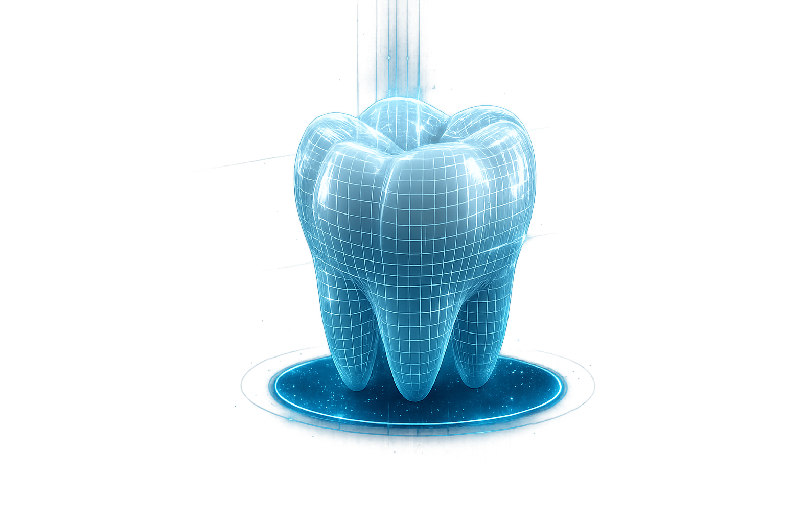
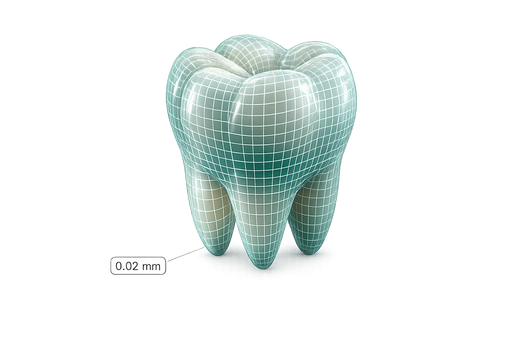
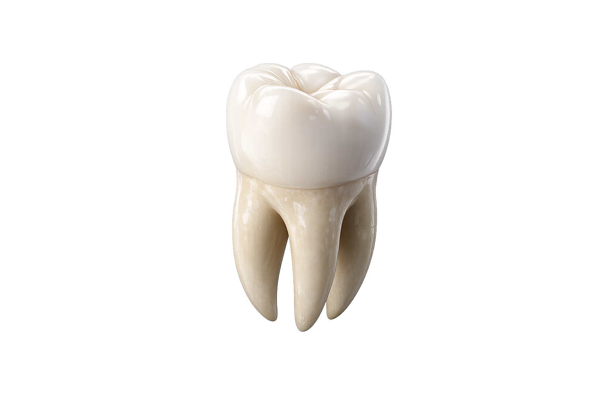

01




Skroluj
Korak 01
Planiranje
Preciznost počinje
detaljem.
Svaka restauracija počinje pažljivim planiranjem i razumevanjem potreba. Posvećujemo vreme svakom pacijentu pre nego što počnemo sa radom.
Trajanje
45 min
Preciznost
±0.01 mm
Korak 02
Digitalizacija
Digitalni
otisak.
Koristimo napredne 3D skenere za precizno digitalno beleženje svakog detalja. Bez gipsa, bez neprijatnosti — samo savršena tačnost.
Rezolucija
20 μm
Skeniranje
60 sek
Korak 03
Modelovanje
CAD dizajn sa
mikronskom preciznošću.
Digitalni dizajn omogućava savršenu adaptaciju i funkcionalnost. Svaka krivina modelovana je u 3D pre nego što rezač dotakne materijal.
Tolerancija
0.02 mm
Software
CAD/CAM
Korak 04
Izrada
Izrada vrhunske
restauracije.
Koristimo najkvalitetnije materijale i najmodernije tehnologije. Rezultat je restauracija koja izgleda, funkcioniše i traje kao prirodni zub.
Materijal
Cirkonija
Trajnost
15+ god